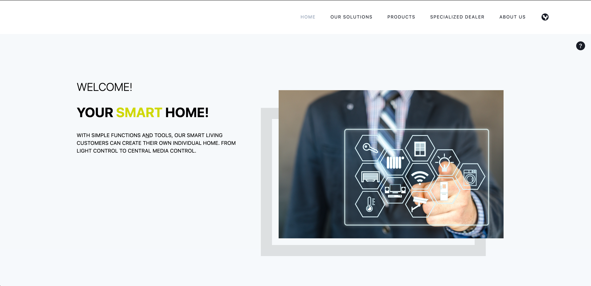

Readme » Getting Started
Getting Started
This guide describes how you can implement your first template, how to add custom CSS styling and how to change the app layout.
My First Template
This chapter describes how to set up the project and complete the first steps.
Setting up the project
-
Open the terminal and if needed, navigate to your preferred directory where the project should be saved.
-
Clone the project using the terminal command
git clone https://github.com/e-Spirit/fsxa-pwa.git. The project should be downloaded into a folder calledfsxa-pwa. -
Navigate to the newly created folder with
cd fsxa-pwa. -
Copy the existing
.env.templatefile and paste it with the new name.envor simply run the commandcp .env.template .env. -
The .env file must contain all the information you need to access your own system. You can get this information from your contact at e-Spirit AG. By default, this file is located in the
.gitignoreand is therefore not persisted. Each required attribute is explained briefly, for a more detailed description please check the configuration page. -
To install the needed dependencies run the command
npm install. -
After all dependencies are installed, you can start a local development server with
npm run dev. -
After the server is started, it can be accessed at http://localhost:3000 in your browser.
Development mode
There is a development mode that helps to easily map the content coming from the CaaS.
To enable the development mode, the variable devMode must be set to true in the fsxa.config.ts file. Be aware that you have to restart the server when you change anything in this file. This file is also checked into git. So be sure to change the variable back to false before deploying to production.
If you are in development mode and a component on the page has not been developed yet, you will get an info box which shows exactly which component is missing and what information in the component can be addressed.

If you are in development mode and you have already implemented the component, then you will see question marks when hovering over the element.

Clicking on this question mark will provide you with more information about which component is being displayed and what data is available.
Writing components
In this section we will be exploring how to go about implementing a missing Teaser section.
When you go to the home page in the development mode, you will see that one component is missing.

This infobox tells us that the app expects a component of type Section. We can also see that the key of this missing section is teaser.
In the fsxa.config.ts file we can see that our section components are located in ~/components/fsxa/sections.
That’s where you want to create a new file for the component.
Make sure, that you name the file just like the key that is required. In our case it is teaser so we name our new file Teaser.tsx.
Next we need to import two classes that are required to define our new component:
typescript jsx import Component from 'vue-class-component' import { FSXABaseSection } from 'fsxa-pattern-library'
With this we can start writing our class.
typescript jsx @Component class TeaserSection extends FSXABaseSection<{}> {}
This class expects us to implement render function. This function describes which HTML will be displayed in our component.
To keep things simple for now we will write just a simple render function to see if our component is recognized.
typescript jsx render() { return <div>Hello Component</div> }
To wrap things up we need to export our class.
typescript jsx export default TeaserSection
In the end our Teaser.tsx should look something like this:
import Component from `vue-class-component'
import \{ FSXABaseSection } from `fsxa-pattern-library'
@Component
class TeaserSection extends FSXABaseSection<\{}> \{
render() \{
return
Hello Component
}
}
export default TeaserSectionWhen we go back to the browser, instead of the infobox we should see our component.

Our component is recognized correctly. But we still do not display the data from the CaaS in our component. For that we hover over our component and click on the appearing question mark on the right side.

This shows us the data available to display.
For the first example we want to display the st_jumbo_headline.
For this we create an interface in our component and define the name of the attribute and its type.
interface Payload {
st_jumbo_headline: string
}We update the use of the FSXABaseSection with our new payload: class TeaserSection extends FSXABaseSection<Payload>
and use the st_jumbo_headline in our render function.
typescript jsx render() { return <div>Headline: {this.payload.st_jumbo_headline}</div> }
Every attribute in our payload is accessible via this.payload
The result should look like this:

Next we want to continue to implement our payload interface. For some objects we use interfaces from the FSXA-Api, so we also have to import them.
import { Image, RichTextElement } from 'fsxa-api'The final interface looks like this:
interface Payload {
st_headline: RichTextElement[]
st_jumbo_headline: string
st_kicker: string
st_picture?: Image
st_picture_alt: string | null
st_text: RichTextElement[]
st_button?: {
data: {
lt_button_text: string
lt_internal: {
referenceId: string
referenceType: string
}
}
}
}Note that attributes followed by a question mark are optional.
In order to display all this information, we can use a component from the fsxa-ui. First we need to import it. It is located under Sections in the fsxa-ui.
import { Sections } from 'fsxa-ui'Since we are using richtext we also need to import FSXARichText from the fsxa-pattern-library
import { FSXABaseSection, FSXARichText } from 'fsxa-pattern-library'And then we can use them in our render function:
typescript jsx render() { return ( <Sections.TeaserSection headline={(<FSXARichText content={this.payload.st_headline} />) as any} kicker={this.payload.st_kicker} text={(<FSXARichText content={this.payload.st_text} />) as any} buttonText={this.payload.st_button?.data.lt_button_text} onButtonClick={() ⇒ this.triggerRouteChange({ pageId: this.payload.st_button?.data.lt_internal.referenceId }) } media={ this.payload.st_picture ? { type: 'image', src: this.payload.st_picture.resolutions.ORIGINAL.url, resolutions: this.payload.st_picture.resolutions, previewId: this.payload.st_picture.previewId } : undefined } /> ) }
Finally, we can name our component. We do this in the @Component annotation.
typescript jsx @Component({ name: 'TeaserSection' })
The final Teaser.tsx file looks like this:
import Component from `vue-class-component'
import \{ FSXABaseSection, FSXARichText } from `fsxa-pattern-library'
import \{ Sections } from `fsxa-ui'
import \{ Image, RichTextElement } from `fsxa-api'
interface Payload \{
st_headline: RichTextElement[]
st_jumbo_headline: string
st_kicker: string
st_picture?: Image
st_picture_alt: string | null
st_text: RichTextElement[]
st_button?: \{
data: \{
lt_button_text: string
lt_internal: \{
referenceId: string
referenceType: string
}
}
}
}
@Component(\{
name: `TeaserSection'
})
class TeaserSection extends FSXABaseSection \{
render() \{
return (
<Sections.TeaserSection
headline=\{() as any}
kicker=\{this.payload.st_kicker}
text=\{() as any}
buttonText=\{this.payload.st_button?.data.lt_button_text}
onButtonClick=\{() =>
this.triggerRouteChange(\{
pageId: this.payload.st_button?.data.lt_internal.referenceId
})
}
media=\{
this.payload.st_picture
? \{
type: `image',
src: this.payload.st_picture.resolutions.ORIGINAL.url,
resolutions: this.payload.st_picture.resolutions,
previewId: this.payload.st_picture.previewId
}
: undefined
}
/>
)
}
}
export default TeaserSectionHere you can see the result. 
Custom CSS
There are a few ways to include your own CSS. In this chapter a short overview will be provided. For further details please visit this page.
Using TailwindCSS
TailwindCSS is included by default in the FSXA-PWA. TailwindCSS is a utility-first framework to provide a lot of classes to design the website directly in the markup without the need to write additional classes.
Global CSS
You can import one or more CSS files globally. These are then available in every component.
To include a CSS file, you have to modify the css attribute in the nuxt.config.ts file and create a new entry there.
Example:
/*
** Global CSS
*/
css: [
'fsxa-pattern-library/dist/fsxa-pattern-library.css',
'fsxa-ui/dist/fsxa-ui.css',
'~/path/to/your/global.css'
],Please keep in mind not to remove the CSS to the FSXA-Pattern-Library and FSXA-UI, when you want to use these projects.
Using style in components
JSX/TSX Components
When implementing components using JSX or TSX. You can simply declare your CSS classes in a stylesheet and import that stylesheet into your component using the Typescript or ES6 style import.
For example you can make a style.css file next to your component
.headline {
font-size: 2rem;
font-family: sans-serif;
font-weight: bold;
color: coral;
}And then import and use it in your component like this
…
import `style.css'
interface Payload \{
st_title: string
}
@Component(\{
name: ``Headline'',
})
class Headline extends FSXABaseComponent\{
render() \{
return (
....
<h1 class="headline">{{this.payload.st_title}}</h1>
</div>
)
....
}
}SFC Components
When using vue single file components you simply add a style tag to your file and declare your CSS-Classes there. The classes are then available within the scope of your component.
<template>
<div>
<h1 class="headline">{{this.payload.st_title}}</h1>
</div>
</template>
<script>
...
</script>
<style>
.headline {
font-size: 2rem;
font-family: sans-serif;
font-weight: bold;
color: coral;
}
</style>Changing the App Layout
In the app layout you can specify a frame for all pages. For example, if all pages include navigation, it can be specified there.
Thereby the FSXABaseAppLayout is extended to adjust attributes like the appState and appError. More information can be found here.
In the JSX/TSX context {this.$slots.default} defines where the contents of the container will be displayed.
Example:
render(){
return (
<div>
<Navigation />
{this.$slots.default}
</div>)
}In the SFC context this is achieved with <slot></slot>.
Example:
<template>
<div>
<Navigation />
<slot></slot>
</div>
</template>Furthermore, here you have all the possibilities that have already been described in the chapters My First Template'' and Custom CSS''.